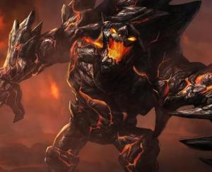

墨菲特简历
基本信息

墨菲特，别称熔岩巨兽，腾讯代理的对战MOBA竞技网游《英雄联盟》中的一名坦克类英雄。通常担任上单。
角色原型
有一个十分和谐的地方，那里万物归一。熔岩是所有创造物的精华，这里的居民都是特别的组成部分。这个地方对称、完全稳定，因此极其美丽。在这里居住的熔岩生物都清楚自己的身份，并全力履行自己的责任。他们像群居生物或蜂巢那样工作和生活。墨菲特总是努力付出自己的全部潜能，作为整体的一部分。他是一个杰出的生物，履行着维持族人完美秩序构想的任务。有一天，空间裂谷在毫无预警的情况下打开了。墨菲特跨越宇宙，被拉到符文之地。对他而言，这次转移痛苦且惊心动魄，因为他与族人的歌声以及他的熔岩被隔绝了——这些自他出生那天起就一直伴随着他。墨菲特发怒了，被困于这个新地域——符文之地——一个已几近被自身的不和谐所吞噬的世界。然而，它需要保护者们将其带离混乱，重返秩序。有鉴于此，这个岩石生物找到了他的真正追求。在审视过自己的畏惧和忧虑后，墨菲特发现符文之地需要他。今天，作为英雄联盟的一份子，他会教训那些扰乱瓦洛兰秩序的人，尤其是那些使用无秩序魔法的人。不幸的是，墨菲特也开始变了，因为在这个充满生气的世界，他被迫独自面对自己深深的孤独。
角色背景
墨菲特是一个庞大的岩石生物，为了给混乱的世界赐予秩序而不懈奋斗。他诞生之初的身份是一个石仆，侍奉着一块超乎凡人理解的石碑，名为“独石”。他用万钧元素之力维护自己的先祖，但最终遭遇了失败。